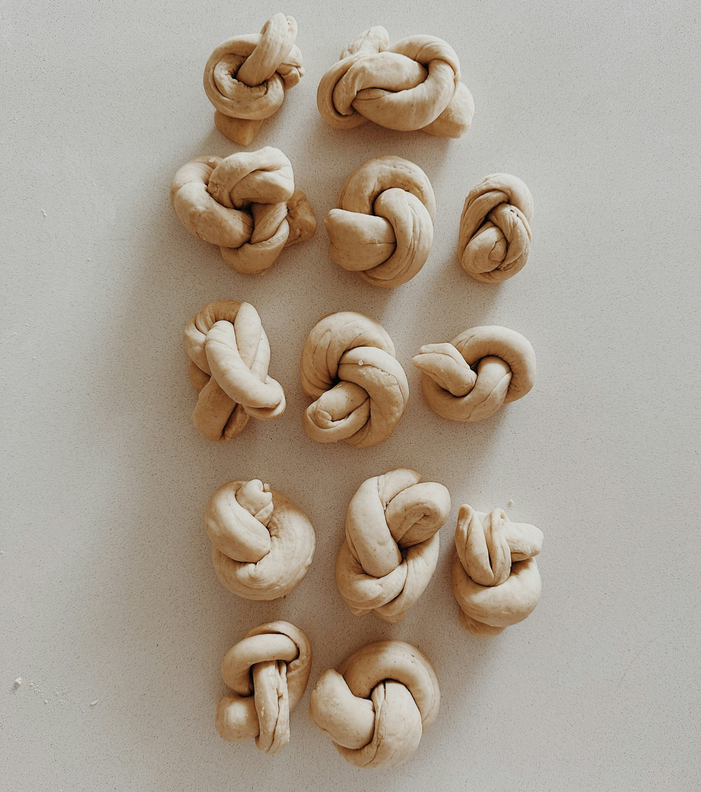

We present constructions of previously unknown diverse
maximal abelian self-adjoint subalgebras (masas) of the
Calkin algebra Q(ℓ2) (bounded operators on a separable Hilbert space modulo compact operators)
generated by projections.
First, assuming the continuum hypothesis CH, for every compact totally disconnected Hausdorff space K
of weight not exceeding the continuum and
without Gδ points, we construct a masa of Q(ℓ2) which is *-isomorphic to the algebra C(K)
of complex-valued continuous functions on K. This is sharp in two ways: (1) there cannot be other *-isomorphic types
of masas of Q(ℓ2) generated by projections and so, this result gives a complete *-isomorphic classification
of masas of Q(ℓ2) generated by projections, (2)
some additional
set-theoretic hypothesis, like CH, is necessary to have all these C*-algebras as masas of Q(ℓ2).
This shows that masas of the Calkin algebra could have rather unexpected properties
compared to the previously known three *-isomorphic types of them generated by projections:
ℓ∞/c0, L∞ and ℓ∞/c0⊕L∞.
For example, they may not admit conditional expectations, be factorizable as tensor products of infinite dimensional
C*-algebras,
their Gelfand spaces could be topological groups and admit
nontrivial convergent sequences or could be hyper-Stonean admitting nonseparable category measure,
extremally disconnected but not hyper-Stonean
or could be one of many exotic compact spaces constructed under the continuum hypothesis.
Secondly, without making any additional set-theoretic assumptions we construct a family
of maximal possible cardinality (of the power set of ℝ) of pairwise non-*-isomorphic
masas of Q(ℓ2) generated by projections which (a) are not SAW*-algebras unlike
the liftable masas (Gelfand spaces in this group of our masas are not F-spaces) (b) do not
admit conditional expectations.
This improves
the results which required additional set-theoretic hypotheses to construct
a single masa of Q(ℓ2) generated by projections without a commutative lift.

Answering questions of A. Avilés, F. Cabello Sánchez, J. Castillo,
M. González and Y. Moreno we show that the following statements are independent of the usual axioms ZFC with arbitrarily large continuum: for every
(some) ω < κ < 2ω
- any linear bounded operator T : c0(κ) → ℓ∞/c0 extends to any superspace of c0(κ).
- any isomorphism between any two copies of c0(κ) inside ℓ∞/c0 extends
to an automorphism of ℓ∞/c0.
This contrasts with Boolean, Banach algebraic or isometric levels, where the
objects known as Hausdorff gap and Luzin gap witness the failure in ZFC of
the corresponding properties for the corresponding structures already at the
first uncountable cardinal κ=ω
1.
In particular, consistently, any two pairwise disjoint families in P(ℕ)/Fin
of the same cardinality ω < κ < 2ω can be mapped onto each other by a linear
automorphism of ℓ∞/c0 regardless of their different combinatorial, algebraic
or topological positions in P(ℕ)/ Fin.
Our positive consistency results use a restricted version of Martin’s axiom
for a partial order that adds an infinite block diagonal matrix of an operator on
ℓ∞ which induces an operator on ℓ∞/c0 . The construction of its finite blocks
relies on a lemma of Bourgain and Tzafriri on finite dimensional Banach spaces.
Our negative consistency results rely on an analysis of almost disjoint families of ℕ, the embeddings of
c0(κ) into ℓ∞/c0 they induce and their extensions
to ℓ∞c(κ).